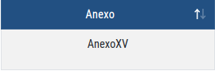
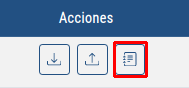
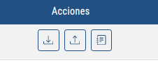
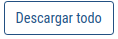
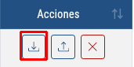
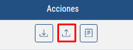
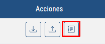

Esto es una ayuda para poder manejar la lista de Anexos
Esta vista muestra una lista de anexos asociados a un alumno
Explicación de los campos:
Este campo nos muestra el típo de anexo
Este campo nos muestra si el anexo en cuestión ya ha sido rellenado o no
Este campo nos muestra las acciones disponibles
Explicación de los botones:
Con este botón podrás descargar todos los anexos que estan activos en la tabla
Con este botón podrás descargar un anexo en concreto, el que se muestra en la linea de la tabla donde se encuentre el botón
Con este botón podrás subir un anexo en concreto a la nube
Con este botón podrás abrir un modal que, según del tipo de anexo que se trate, te permitirá completar unos datos u otros para posteriormente ser descargado
